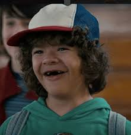

Dustin Henderson is a fictional character from the Netflix television show Stranger Things, portrayed by Gaten Matarazzo. The character is depicted as a friend of Mike Wheeler, Lucas Sinclair and Will Byers. When Will goes missing, Dustin, Mike and Lucas go looking for their missing friend and come across Eleven, who helps search for Will using her telekinetic abilities. In the second season of the show, Dustin forms a strong friendship with Steve Harrington, a relationship that received positive acclaim from fans and critics. Dustin is also depicted as having cleidocranial dysplasia, a condition written into the character after Matarazzo’s casting.
